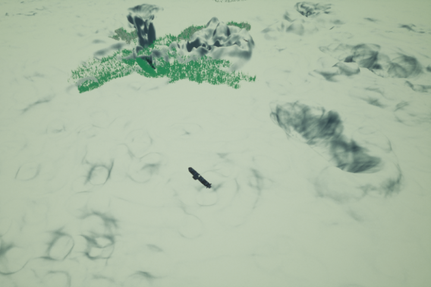
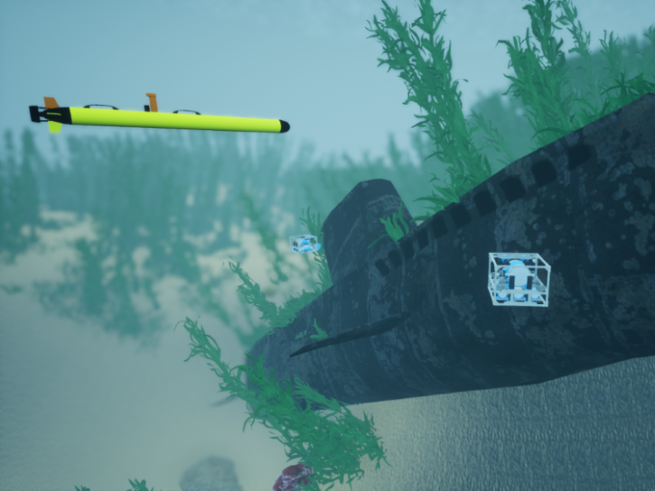
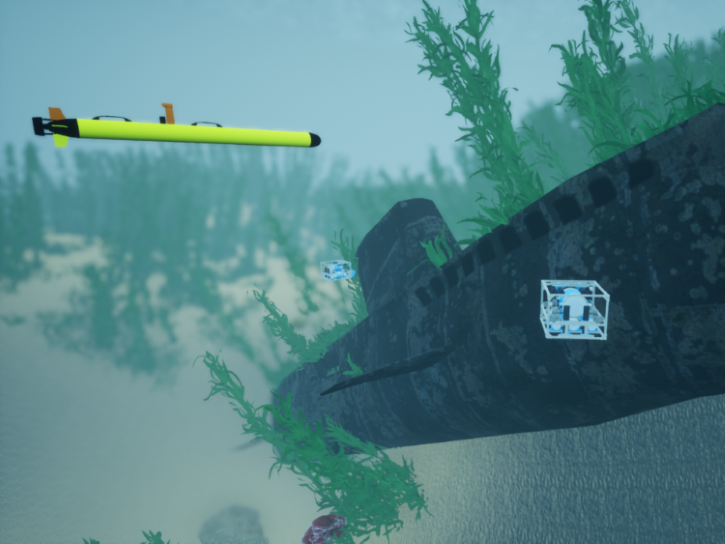

OpenWater
This is a large open water environment around 2km x 2km in size. There’s a number of rolling hills, sunken submarines and planes, and plant life that can be inspected.
This is a large open water environment around 2km x 2km in size. There’s a number of rolling hills, sunken submarines and planes, and plant life that can be inspected.
